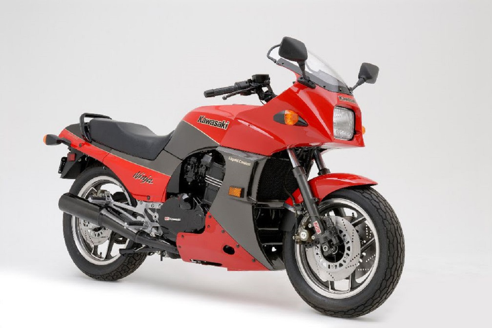

Nueva Kawasaki Ninja tenía una línea revolucionaria y atrevida,
tanto como en su momento lo fue la Suzuki Katana, por ejemplo.
Pero seguramente lo más novedoso de la GPZ 900 R era su motor:
por primera vez en la historia, una moto de serie montaba un tetracilíndrico en línea
refrigerado por líquido y con una culata de 16 válvulas.
El de la GPZ cubicaba 908 c.c. y entregaba la elevada potencia de 115 CV.
La nueva Ninja tenía una posición de conducción que, para la época,
se podía considerar deportiva: estriberas retrasadas y algo elevadas, y unos semimanillares que,
aunque montados por encima de la pletina, estaban bastante inclinados.

La moto fue presentada mundialmente en 1983, en el circuito de Laguna Seca. El entonces reciente ganador del campeonato AMA norteamericano de aquel año con una Kawasaki GPZ 750- Wayne Rainey, giró en 1’16 en el circuito norteamericano con una Ninja de serie.
Antes de que llegase a los concesionarios en 1984, ya en el verano del año anterior Kawasaki alineó tres flamantes Ninja en el Tourist Trophy, dentro de la categoría de motos de serie, logrando la victoria (Geoff Johnson) y la segunda posición.
También la película ‘Top Gun’ (1986) contribuyó a lanzar la GPZ al estrellato, al ser la moto que conducía Tom ‘Maverick’ Cruise en el famoso film.
La Ninja fue sustituida por la GPZ 1000 RX en 1987. Sin embargo, la 1000 no tuvo ni mucho menos la acogida de la 900, y Kawasaki dio marcha atrás: volvió a producir la Ninja, ahora con ambas llantas de 17” y frenos más potentes. Estuvo en producción hasta 1996… 12 años, nada menos.